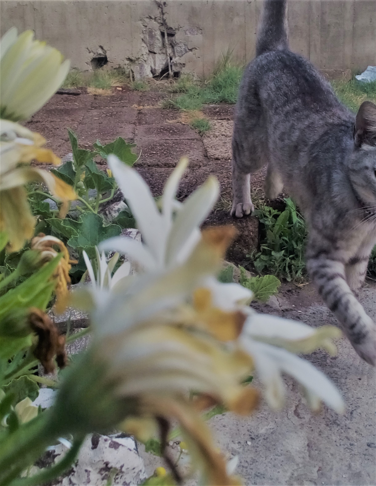

¿Que hare con mi vida?
Esa pregunta me ha azotado durante 6 años, me comence a preocupar por m futuro a muy temprana edad,mi familia me enseño que debia de estudiar para luegoo casarme y que mi esposo me mantuviera y si el me corria de mi casa, me pondria a trabajar para que no terminar en la calle y "se me facilitara la vida". NO
no me gusto pensar eso, no me gusto que me dijieran eso,no me gusta que me lo dijan, cualquier persona que no repita ese ciclo no es aceptada en mi familia.
Sin embargo con el pasar del tiempome he dado cuenta lo que en reallidad quiero hacery cuales son mis sueños nos on pequeños
Convertirme en bioquimica
Quiero estudiar en ENCB del IPN
- Viajar y viajar
Este es mi mas grande y ambicioso sueño quiero conocer el mundo hasta cansarme, viajes internacionales y nacionales mas alla de huir quiero vivir, mis objetivos pueden ajustarce y lodijo con mucha seguridad si muriera viajando muriera feliz
- Ser poliglota
 Se volvio un gusto desde que aprendi mas idiomas que el ingles, pero con el tiempo poco a poco he dejado de estudiarlas, me parece atractivo ya que haci pudes hablar en voz alta lo que tu quiera con la sertesa de que estan a salvo tu conversacion, ademas las lenguas tienen algo que me hacen querer saberlas todas
Se volvio un gusto desde que aprendi mas idiomas que el ingles, pero con el tiempo poco a poco he dejado de estudiarlas, me parece atractivo ya que haci pudes hablar en voz alta lo que tu quiera con la sertesa de que estan a salvo tu conversacion, ademas las lenguas tienen algo que me hacen querer saberlas todas
- Vivir sola
Dentro de un año lo volvere realidad, quiero idenpendencia, quiero saber lo que es tener un hogar donde pueda hacer lo que quiera, la razon de esto es que en mi casa hay cosas muy estupidas que no puedo cambiar como:
- No puedo bañarme en la noche
- No puedo no hacer nada, siempre tengo que estar limpiando la casa
- Mi padre maltrata a mis mascotas
- No puedo hacer mi tarea en la noche
- A mi papa no le gusta que este en mi celular
- Cuando hago el quehacer de casa no agradecen y cuando no regaño
- viloencia
- Ser feliz
Suena estupido pero seria bueno vivir en paz y no tener tantos problemas
- Vender mis fotos
Mas alla del dinero me gustaria dedicar el tiempo para hacer esto tomarmelo enserio y hacerlo con pasion
- Publicar mis libros
Esto me haria muy feliz tengo muchas ideas que me gustaria ver plasmadas mis historias, volveria loca mi imaginacion y me pondria manos a la obra,es algo que meda mucha ilusion